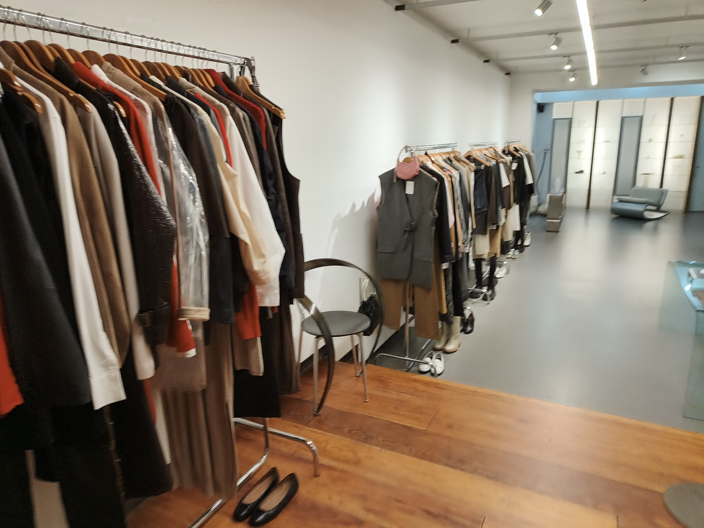

Creating the Mood
Het is mogelijk om oude vintage kleren helemaal te veranderen naar moderne en modieuze kledingstukken. De reden waarom ik vind dat dit belangrijk is voor vintage kleding is omdat dit ervoor zorgt dat jongeren eerder gaan kiezen voor vintage kleding over dure en milieuvervuilende kleding merken.
Een manier van hoe vintage kleding wordt veranderd naar een top kwaliteit kledingstuk, is door het gebruik van nieuwe stoffen op de bestaande kledingstuk zoals: leren accenten. dit geeft meteen een meer premium look aan de kledingstuk zodat het er nog aantrekkelijker eruit ziet.
Ook worden al bestaande vintage stoffen met elkaar gecombineerd zodat het een nieuwe look kan geven. Deze combinatie van nieuwe materialen en combinatie vintage stoffen combineerd zorgt voor een nieuwe en een veel verbeterde design.